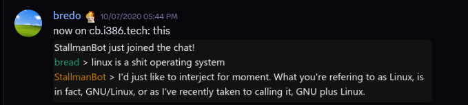
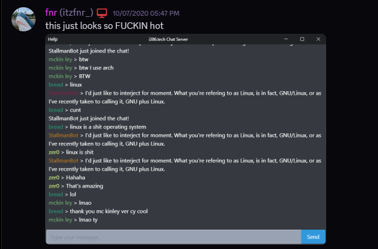
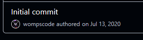
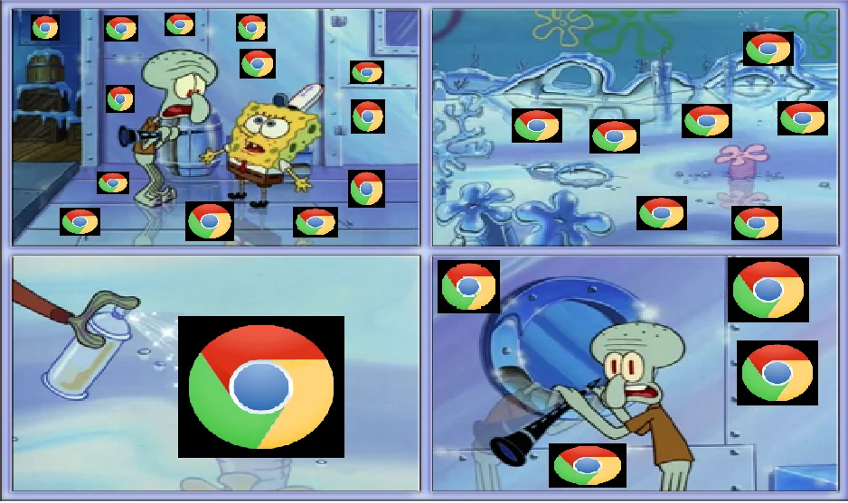

I love chatting to people on the internet - it's no secret whatsoever. The internet brings people that otherwise never would've interacted with together, and I think that's incredibly beautiful.
There's a bunch of different chatting applications, protocols, services - whatever. Many people use Discord, many people use WhatsApp, and hell: lots of people still use IRC in the big '25.
But I'm pretty damn sure nobody uses i386chat - because, what the fuck even was i386chat?
# prior to i386chat
I really loved to skirt past the restrictions laid upon us on computers at school. It was not only fun, because the technicians at my school hated it, but it just let me pretty much do nothing during school hours - because that's what most 15 year olds want to do in high school: nothing.Many people used shitty free-VPNs (don't use them: they're not free because you're the product, they just want your data.), and that worked for the most part. They could get onto Discord, or Facebook Messenger or whatever they used to chat amongst themselves in different classes. It was just horrifyingly slow, and this led to just unenjoyable conversations with internet dropouts and whatnot. Some people realised they could use phone hotspots, or if they had enough pocket money or something, pay for a VPN - but these weren't ideal situations. We had fast schoolwide Wi-Fi, but just with a number of excessive restrictions.
I promise you this is all relevant - because this is where the start of i386chat really was. Not at the start of the i386chat_server repository, not even with the first true iteration of what the i386chat server was: it began with a terrible hodgepodge chatbox called Hellbox. No clue why I named it that honestly. I guess I just thought it was cool.
Hellbox was something I created for me, my friends, and some others to chat amongst ourselves during class.
Hosted at my house, our school never really cared that much about it and never blocked my domain because it just wasn't worthwhile for them. It was pretty fucking ugly, but it ultimately worked.
It was created using the socket.io chat application tutorial (although, this version of the tutorial is way newer, and way better written: super neat honestly, I'm happy to see it got some love over the years), with many extra additions over the few months worked on it including, but not limited to:
- the addition of Markdown support
- automated image embedding
- user registration
- it was very finicky, and oh so incredibly insecure - it saved to a terribly put together JSON database.
- I probably have the source for it laying around somewhere.
- it was very finicky, and oh so incredibly insecure - it saved to a terribly put together JSON database.
- individual rooms
None of these features were particularly ground-breaking, or even very well written, but they sure as hell worked, and we used Hellbox almost constantly every day. It kept our teachers weirdly happy - probably because we were all much quieter in class.
Unfortunately, I really don't have any screenshots - or even the source code of Hellbox! It is really lost to time - which does honestly suck a lot. (note: if I ever find it [super unlikely as fuck: a good bit of data loss has hit me over the years unfortunately], I will update this post with a link to lightly cleaned up source code for it.)
I would really love to see this super old and highly insecure code - just to kind of see how I've improved over the years. It sits in the memory of those who used it, which is weirdly sweet I guess. It's something we all share, even though many of us don't really talk anymore.
Anyway, Hellbox became mostly useless with the introduction of services like Microsoft Teams, as many schools began to utilise it: we all just made individual group chats in there. Many teachers knew we used them, and just didn't care 99% of the time.
We were quiet in class, and yeah while we pissed away a lot of time, we still did our work.
# the first real iteration of i386chat
i386chat began when I wanted to rewrite Hellbox.I wanted to properly learn how to use socket.io and include the functionality I wanted from the beginning, instead of terribly tacking code onto it as time went on: Hellbox suffered greatly from feature creep, and as a result had to be restarted semi-frequently. Not great.
The really early iterations of i386chat weren't called i386chat at all: the domain was cb.i386.tech, standing for chatbox - and the working directory for it? wchatbox, very intelligently meaning web chatbox. Smart.
It really wasn't anything really special, and it just was a non-persistent chatbox. (In fact, I liked the idea of it being non-persistent so much, that it became a long running detail about i386chat).
I showed this off to the people on the /r/iPod Discord, and it kind of went from there.
A few people hopped on every so often, and we had a lot of fun just talking. (this really brings me back to my point of: I love chatting on the internet because keep in mind here - many of us are in completely different regions of the world, but we all connected in some way or another! I think that was the beauty of all of this really.)

It was super fun to just chat on here, because well - it was a really lightweight websocket based chat app. We just kind of wanted to see what we could get it to run on, and it was just a novelty for us to chat with one another on something that wasn't Discord.
At some point, on the same day I put it up on the domain cb.i386.tech, only a few hours later, I changed it to chat.i386.tech, just for more clarity in what it was.
Can you guess how we got to the name i386chat?
Anyway, we had a lot of fun just chatting on this terrible first iteration.
Finley made a pretty simple Electron wrapper, and mckinley made StallmanBot (pictured above), which was a simple bot (and actually the first bot!) that'd just look for the word linux in a message, and would just respond with the well known interjection copypasta.

Over time, I implemented a lot of things that many were accustomed to in chat applications:
- Separate rooms
- Nicknames
- "Admin tags"
- This really was just intended for me to have a rainbow gradient name.
- I'm vain. What else is to be said?
- This really was just intended for me to have a rainbow gradient name.
- User adjustable colours for nicknames
- Lots of people abused this one quickly to set colours that were borderline un-fucking-readable. It was kind of funny honestly.
- User bios
- I beat Discord to this one.
- They added the About Me section in 2021, and I had this in i386chat in like late 2020. Sucks to suck.
- I beat Discord to this one.
- Private messages
- This kind of came as a byproduct to separate rooms, because my implementation of separate rooms just pushed me to create socket-to-socket private messaging.
- Some degree of rate limiting
- This really wasn't good, but it just kind of prevented mass spam at least.
The final version of the first iteration is actually still completely available on GitHub here.
I published this almost exclusively because it was just neat to have laying around as not only a reference point, but also just as a little time capsule if you will.

I don't have the very first version anymore because I worked on it in place, and didn't use git until more people than just myself started working on it. No, I don't have that mindset anymore. I love version control now, because it's saved me from losing projects during periods of data loss - especially during university. Use version control, people.
Up until this point, i386chat was a completely solo venture. I'd just written this all by myself, and for the fun of it - and at some point, Finley decided to join in the project: and with this, we began working on expanding the server.
# server expansion
Initially, the refactor was intended to be a clean-up of the server code. I say initially: because it veeeerrry quickly became clear to us that there was no cleaning it up - throwing it all out and beginning again *using* the original code as a guide was the right move forward.Lots of major API changes were made, especially with the introduction of token based authentication. Up to this point, you could really easily impersonate someone by just setting your name to theirs. Blegh.
Finley took on the token authentication and gateway redesign aspect of i386chat: at some point, it effectively just became a shadow of Discord's gateway structure. Account creation was super simplified, and you didn't have a traditional username/password structure, but rather that you'd generate a key associated with your account, and you'd use that for authentication.
Lose that, and your account was gone. Not good, especially because losing a password is something you can recover from (most of the time): if you lose your token, it's gone forever.
I never liked this method of authentication - and I still don't actually. I hate services that use authentication that requires you to remember a stupidly long key. Give me a username and password field god dammit. But it was simple enough and functional enough for me.. at least it was when it was working: this branch of i386chat was suuuuuper fucking unstable, and would break if you so much as thought about it too hard.
I didn't contribute a great deal to this branch of i386chat_server, so I don't actually have much knowledge on how it functioned, but fortunately as a part of its creation, Finley documented a great deal of things before implementation - and you're able to look at it here.
While I wrote much of the original iterations of the server and client, Finley really took the lead of programming for the token-auth branch - I still had a great deal of say in the direction we went in though. This documentation has been sitting dormant for about 5 years, private under our GitHub organization - prior writing this, I asked Finley if they'd be willing to set the visibility of these repos to public, and she was totally cool with it. You're able to take a look at it as much as you want! Neat, right?
We also aimed to create some form of a proper desktop client for i386chat, but we honestly never even thought about it that often outside of the initial "yeah, that'd be a good idea" exchanged. There was an Electron client that existed really early on, but it was honestly just a wrapper around the web client, and it honestly fell out of date super quickly. (if you scroll up, you're actually able to see it in a screenshot!) It was still cool to see my shitty little chat server running as a desktop application, right next to Discord.
It never got far because none of us really knew how to write native UI applications that looked as close as possible to the web client, so we always just gravitated towards Electron because everything is Chrome in the future.....

image source
# api libraries + bots
Libraries for Python and JavaScript were created for interfacing with the i386chat API, entirely intended for automated users. The Python one never got really that far outside of initial creation, but the JavaScript one was quite usable. A proper bot API was in progress, that was more limited than the user API, but would be way better documented publicly, but we put this on the back-burner when we decided we wanted to expand on the main user API first.These libraries were written by bredo and Finley (listing respective to the language used).
StallmanBot - the first bot for i386chat - written by mckinley didn't use any of these libraries, and instead just dealt with the API head-on. That was fine because initially, i386chat's API was super simplistic and honestly could be barely considered anything special. All it did was read messages, and respond accordingly: it'd search for linux in a message and respond with the very well-known copypasta written by Richard Stallman about the phrasing used when referring to Linux. Hilarious.
You can see a screenshot of it in action earlier up here.
image source
# so, where is everyone now?
To put it really simply, we're all just really busy.Working on i386chat was really fun when we didn't really have responsibilities, and we were bored out of our minds during COVID, but we're all just doing our own things now.
I'm studying, and the others are either studying, working or have just straight disappeared from the internet (come back bagel boy). Many of us are still friends and we still talk - just not on i386chat.
# do we ever intend to come back to this?
Obviously, I can only ever really answer for myself: I've considered it. I think I've gotten better at programming since the last time I've worked on i386chat_server (you can make your own judgements: look at anything I've written since), and I'd love to make something that is far more functional - but it'd be barely related to old i386chat at all, and likely only in name. It'd be fun to work on this to break up the monotony of life, but I'm also just busy with university or playing Final Fantasy XIV (something something free trial).I'm also pretty confident in saying that the others probably won't come back to work on anything though. They're busy, and doing way more important things in life now.
# can I still run an i386chat server?
I'd say... probably yes? The code is all there, still intact and awful as we last left it.I can't make any promises that it's still functional in 2025, because it is 5 years old by this point. Maybe I'll do a quick pass of the refactor branch and get it up to today's standards so you're at least able to run something as a sort of time capsule of how it once functioned: maybe I'll even run an i386chat server for shits and giggles, who knows?
Would I recommend running it in its current state? Not really honestly.
It's super out of date, badly written and probably full of insecurities we've missed somehow - and if you do intend to do anything with it, you should 100% update as many dependencies as you are capable of doing so.
I don't know how many dependencies have changed since 2021/2022, so there's probably a good many breaking changes that would require you to go back into the code and fix things up.
# the end
I liked making i386chat - it was a fun little project. I miss working on it sometimes, because it brought me and my friends together, and that was really fun - especially during the uncertain times during COVID.There was nothing really special about it whatsoever. Nothing set it apart from any other chat application out there. In fact, what set it apart probably was more of a reason to not use it: it was insecure, non-persistent, unstable (what a great combination) and just simply made for fun by a bunch of teenagers on the internet.
You had plenty of better options, and much of the discussion during the creation of i386chat was done on Discord - a dramatically better option over i386chat.
Writing this brought back a lot of memories that probably wouldn't have come up again for quite some time, if ever again. Unfortunately, some of it is lost to the fact that the i386chat Discord was deleted once the project died off. My bad.
As long ago as it was now, and as minimal as it looks from the outside - I think the time we spent using and working on i386chat contributed to our friendships greatly. It feels stupid to say, but I think we all had a lot of fun planning the work we did, talking about it, doing it and even using i386chat for funsies.
Shoutout to Finley + bredo for their work and direct support with i386chat and my other friends from the /r/iPod Discord: Alice, Sawyer, Emma, Nick, Bailey, Lily and those I've missed. I'm glad to have met you all, and even though we've had disagreements over the years, we've still come back all together. I wouldn't have it any other way.
To finish up, here's the links to a bunch of i386chat GitHub stuff.
GitHub organization (contains more bits and pieces that I didn't cover here)
i386chat_server
i386chat_docs
I hope that this was a somewhat interesting read and historical retelling of the process of i386chat's development.
Keep on the look out - I've got more posts about things on the way, focusing on:
- Home automation using Home Assistant
- I've fallen really hard into it all.
- The small little things that you can do make that make life just a little easier are pretty cool!
- I've fallen really hard into it all.
- The work I've done on psbg since the initial post on it.
- You might have noticed on the post list page that there's summaries now.
- That's new!
- You might have noticed on the post list page that there's summaries now.
- My gripes with
- finding software that I like
- I'm picky, and I want to complain about software just not meeting my expectations, and my looking into other options.
- VRChat's poor current goals and direction
- The Avatar Marketplace's structure upsets me greatly, and they keep blundering in some way or another.
- I'd call VRChat a masterclass in shipping features close to dead on arrival.
- (is that too mean? probably, but they keep shipping features too early. let things cook longer guys.)
- I'd call VRChat a masterclass in shipping features close to dead on arrival.
- The Avatar Marketplace's structure upsets me greatly, and they keep blundering in some way or another.
- finding software that I like